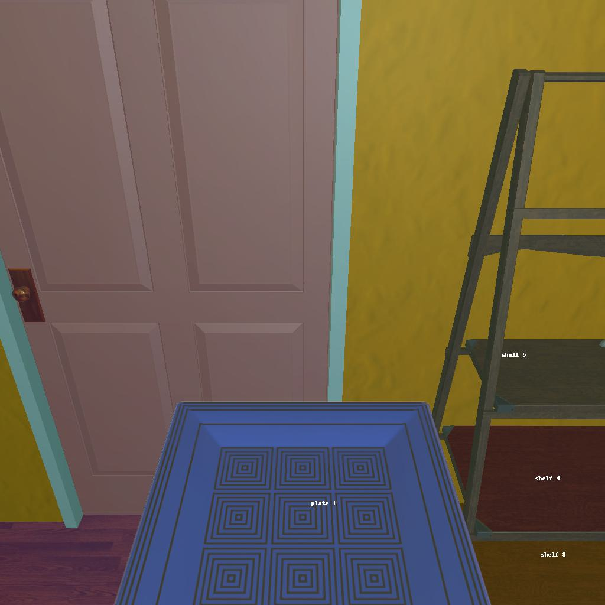
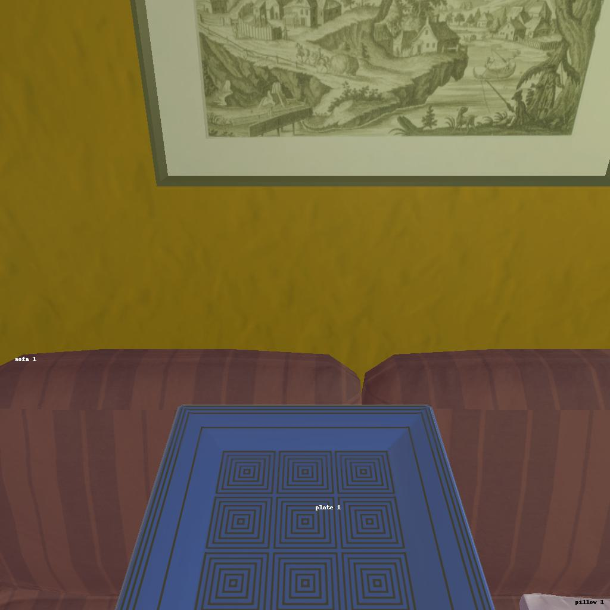
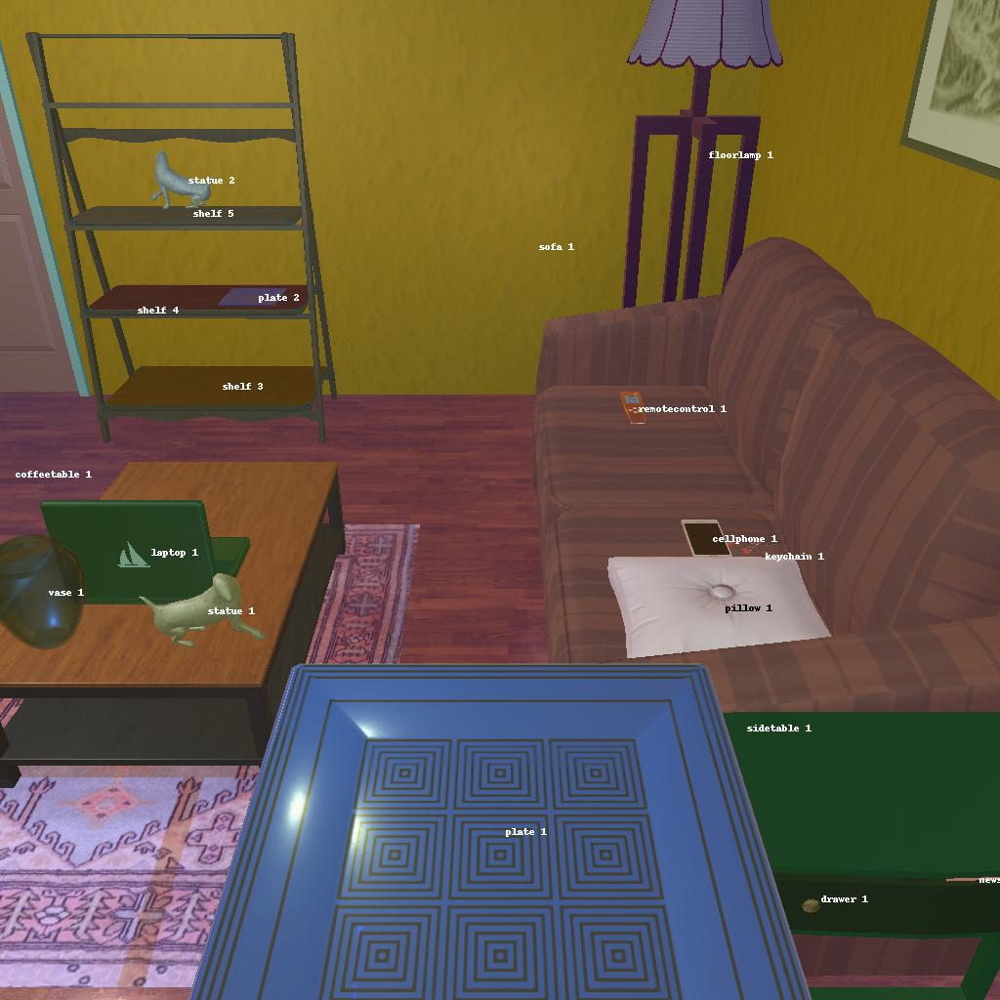

---------------------------------------------------------task: 3---------------------------------------------------------
--------------------------------------------------------------------------------------------------------------------------------------------------------------------
--------------------------------------------------------------------------------------------------------------------------------------------------------------------
Step:--------------------------------------------------------------------------10-------------------------------------------------------------------------------
----------------------------------------
VLM Prompt:
Image1:
Image2:
Image3:
**Instruction**
1. Analyze the provided image to identify all visible household objects, focusing on those relevant to the task description "look at plate under the floorlamp."
2. Use the analysis of the image and the task hint "The agent must find an object of the desired type, locate and turn on a light source with the desired object in-hand." to answer the question: what is the most reasonable action in the choices for the task description "look at plate under the floorlamp"?
4. Decide and write the answer using the template: The answer is: (i): , where i is the real number. If there is no desired object in the image, search every place based on **Initial Observation** to find the object. And if no one is exactly correct, choose a similar answer.
**Initial Observation**
You are in the middle of a room. Looking quickly around you, you can see armchair (1), garbagecan (1), tvstand (1), shelf (1-5), sofa (1), coffeetable (1), sidetable (1-2), drawer (1)
**Answer Choices**
(1): go to armchair 1
(2): go to garbagecan 1
(3): go to tvstand 1
(4): go to shelf 1
(5): go to shelf 2
(6): go to sofa 1
(7): go to coffeetable 1
(8): go to sidetable 2
(9): go to drawer 1
(10): go to shelf 3
(11): go to shelf 4
(12): go to shelf 5
(13): put plate 1 in/on sidetable 1
(14): use floorlamp 1
(15): examine sidetable 1
**Answer**
Let's think step by step by following the instructions.
----------------------------------------
----------------------------------------
Original Response:
Firstly, we need to identify all visible household objects relevant to the task description, which is "look at plate under the floorlamp." From the images provided, we can see a plate labeled "plate 1" in all three images. In Image 3, we can also see a floorlamp labeled "floorlamp 1." Therefore, we have both objects relevant to the task in view.
Next, let's consider the task hint, which suggests that the agent needs to find the object of the desired type (in this case, a plate), locate and turn on a light source (the floorlamp) with the desired object in hand. Based on the Initial Observation, the agent is in the middle of a room and has a list of objects they can go to.
Given that we can already see the plate and the floorlamp in the images, we can deduce the most reasonable next actions. The agent should first take the plate (plate 1) and then use the floorlamp (floorlamp 1) to look at the plate under it.
Among the answer choices, the actions that align with these steps are:
- There is no direct option to take plate 1, but we can assume it is already in hand as it is labeled in all images.
- The action to use the floorlamp which is (14): use floorlamp 1.
Therefore, the most reasonable action for the task description "look at plate under the floorlamp" is to turn on the floorlamp while having the plate in hand.
The answer is: (14): use floorlamp 1.
----------------------------------------
----------------------------------------
>>> Refine Original VLM Response and Get Pure Action: use floorlamp 1
----------------------------------------
-----------------------------------------------------------------
Running time: 13.314680814743042 seconds
Total Money: 1.4937300000000002
-----------------------------------------------------------------
-----------------------------------------------------------------
Text Observation:Nothing happens.
-----------------------------------------------------------------
UNSUCCEED